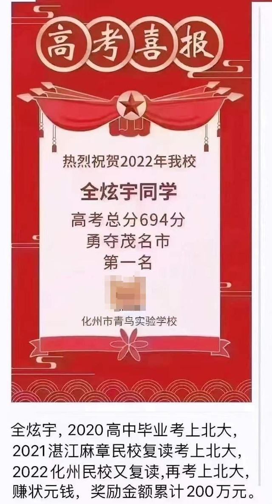

多一个选择，总是好事
原创 V姐万事屋 V姐来了 2022-07-01 00:39 发表于上海 原文链接(长) 原文链接(短)Hi, 我是V姐。
昨天市场跌一跌，今天又涨一涨，都属于正常的市场波动。最近涨得多了，有人要落袋为安，合理。A股现在总体的水位不算高，处于上涨势能中，买入也合理。
昨天行程码摘星，今天国常会重点接着来稳经济。
我仔细看了下，重大项目还是老基建，年内再开工一批高速公路，内河水运等工程。重点强调以工代赈，缓解就业。央行昨天发布了货币政策委员会第二季度的会议通稿，跟一季度对比，主要变化是 **删除了“保持宏观杠杆率基本稳定”，同时多次提及了就业和物价问题。**
通过这些会议，很容易推导出下半年 **就业严峻，水还要放，物价上涨。**
有朋友可能觉得央行说要保持物价水平基本稳定，那应该稳定吧？
是这样的，如果稳定，央行就不会提物价。如果提了，代表不稳定。
就好像你看到路边一个横幅： **禁止随地大小便！**
说明这里有人随地大小便，否则不会有这个横幅。
钱要变毛，老基建又要上马，说来说去，目前没有什么产业能取代地产这个核心支柱。主力信贷都是以土地资源为抵押来扩张的，最大宗的消费是买房，其次是买车和家电。河南首付可以分期了，100万的房子甚至可以首付1万。这杠杆率，期货看了都流泪。
说到底支柱一旦不景气，皇粮都吃不上了。
上海的处级年薪已从35万年薪降低到20万；
主任科级公务员年薪从24万降到了15万;
广东部分地区公务员开始缓发补贴;
浙江机关事业单位人员收入下降约25% ;
杭州事业编收入下降40% 。
各地老师医生降薪更是普遍现象，甚至有地方医院要求医生护士把15年之后的夜班补贴退回去，否则不让评职称。
这是什么呢，千军万马过独木桥，才考上大学，再千辛万苦考研考公，以为总算捧上铁饭碗，结果发现碗上有个洞。
北大毕业做城管，7成清华进体制，深圳中小学老师清一色北清复交+海外名校。
这种事多了，高考雇佣兵就来了。

后台一直有人问我怎么看这个事，这位全同学，连续3年考上北大，今年更是勇夺市状元。21年和22年分别在2个民办学校复读，每年拿奖金100万，到现在一共拿了200万。
有朋友说他影响其他考生权益，这是没有的事，假设北大招100人，调档线过线的会有至少120人，他不去，顺延下一个。
很多人不理解他，是觉得清北毕业出来，一定都有一条人上人的康庄大道等着他们。可以鲜花簇拥，掌声雷动，不是成为科学家，就是科技金融精英，最差也是有风骨的知识分子，从此走上人生巅峰。
你说说，哎，何苦干这没有成就感的事。
有时候我觉得大家都上网，但是确实有人活在梦里。数据已经告诉你了呀，现如今大量清北毕业生，毕业了，抢着去深圳做老师，去杭州做公务员。
他们刨除支出，大概率10年都攒不下200万。
再说现在的200万，和10年后的200万，是同一个200万吗？
这水还在哗哗的不停，10年前房价多少？现在多少？
某乎上总有人因为学霸赚不到钱而愤愤不平，学霸真靠着最大的长处挣到钱了，他们又不满意了。
说到底，学霸只能按照大众想的方式来挣钱才行。可问题是大众想的思路，一般都不怎么挣钱，不然为啥赚钱的是少数人呢？
说到底，这就是为学霸们多提供了一个选择。多一个选择，非强迫，总是好事。
你站在市场角度看，学校需要打响知名度，考生需要钱。他就当是打工了，一年100万，能上清北的实力完美匹配学校招生的需求。
自由市场，供小于求，利己不损人，有啥好骂的呢？
退一万步，他拿着200万，不想再考了，依然可以去上北大。这时候首付也有了，读书时做做自媒体，教大家考试技巧，毕业时，房子市值1000万，全网粉丝500万。
此时，做公务员也好，开培训机构也好，有心搞科研也好，都OK，人生的路无比开阔。
觉得人家没有成为你想象的栋梁之材，讲人家格局小，怎么说呢，网民就是太把自己当回事。
**不尊重商业社会的规律，还要教智商万里挑一的朋友怎么过好这一生** 今晚（周五）8点，我会连麦一个朋友，她今年从国企跳槽进到华为，年薪从20万翻到40万，我们看看她是怎么做到的哈，戳下面预约，晚上不见不散：
今晚（周五）8点，我会连麦一个朋友，她今年从国企跳槽进到华为，年薪从20万翻到40万，我们看看她是怎么做到的哈，戳下面预约，晚上不见不散：
今晚（周五）8点，我会连麦一个朋友，她今年从国企跳槽进到华为，年薪从20万翻到40万，我们看看她是怎么做到的哈，戳下面预约，晚上不见不散：